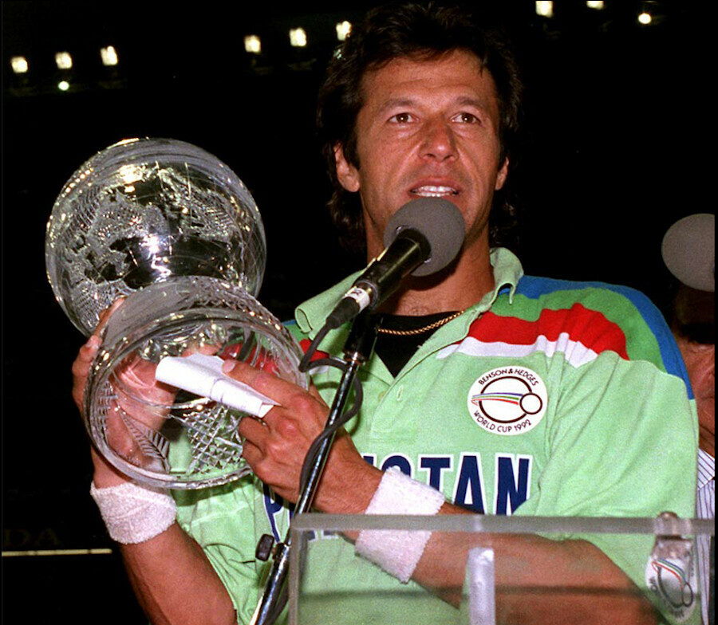
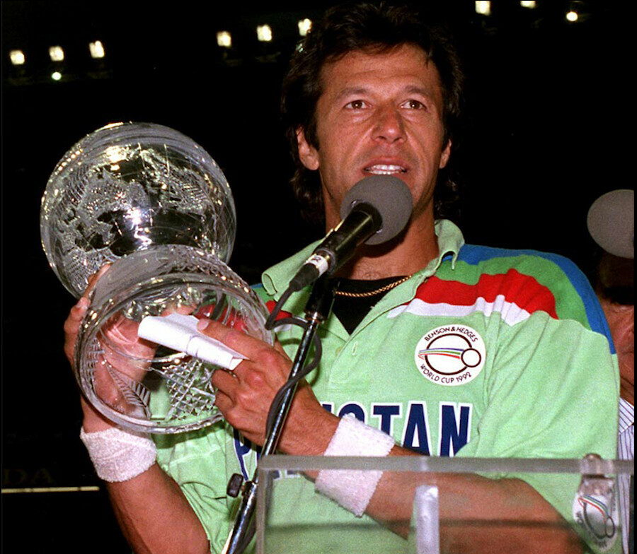

Welcome to My Political Journey
My political journey has been deeply inspired by the leadership and vision of two influential figures in Pakistan's history: Quaid-e-Azam Muhammad Ali Jinnah and Imran Khan. Quaid-e-Azam's unwavering commitment to justice, equality, and the creation of Pakistan as a separate homeland for Muslims in South Asia has left an indelible mark on me. His leadership not only played a pivotal role in the struggle for independence but also laid down the ideals of a nation grounded in rule of law and unity. On the other hand, Imran Khan’s rise in politics has been equally motivating. His journey from being a cricket icon to the leader of the nation represents resilience, determination, and a clear vision to bring about change. Imran's advocacy for a corruption-free Pakistan, along with his focus on improving education, health, and social welfare, has inspired a new generation of leaders. Both of these leaders represent a path that is not just about power but about serving the nation with integrity, dedication, and a deep understanding of its values and potential. Their legacies continue to guide me as I move forward in my political journey, striving to contribute to a better, more prosperous Pakistan I want to become the Prime Minister of Pakistan to serve my country and bring positive change. My vision is to build a prosperous, educated, and corruption-free Pakistan. I aim to improve the education system, provide quality healthcare, and create economic opportunities for all. Inspired by leaders like Quaid-e-Azam, I believe in unity, justice, and equality. My focus will be on reducing poverty, strengthening institutions, and promoting sustainable development. As a leader, I want to empower the youth, ensure social justice, and foster national harmony. With dedication and integrity, I aspire to lead Pakistan toward progress and global recognition.
 
